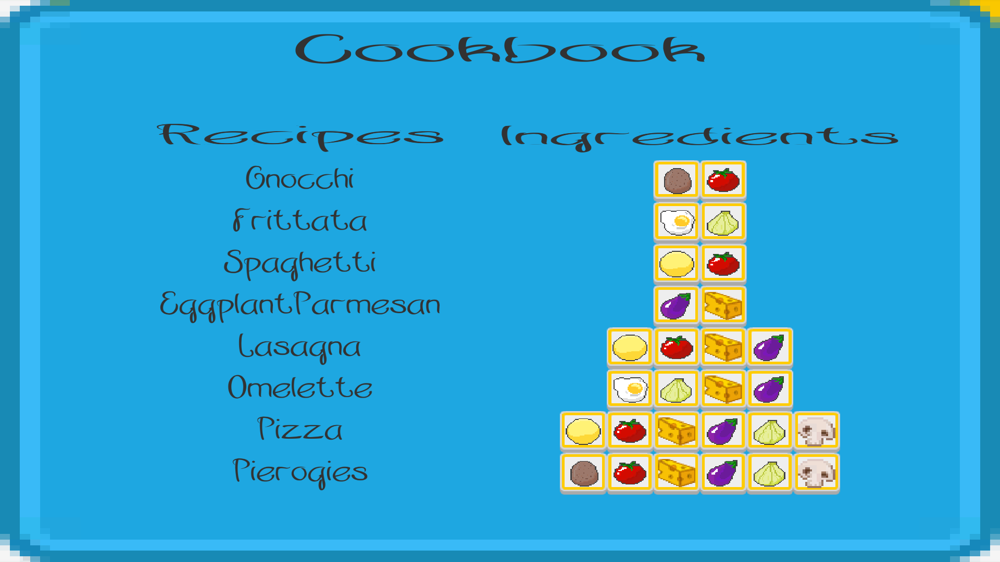
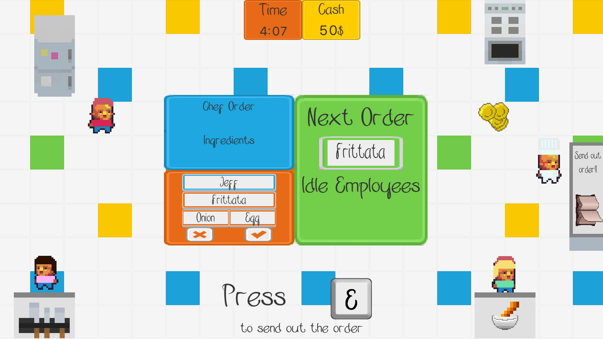

Oui, Chef!!
Oui, Chef!! is a restaurant management game in which the kitchen staff are neural networks trained during play. Training is based on feedback: accept a cook's preparation or reject it and trigger retraining. You don't know how any given training decision will affect their behaviour, and you observe their capabilities through use over time. Managing the kitchen is more like managing real subordinates than managing a game inventory.

The cookbook is structured in three tiers, with higher-tier recipes built from combinations of lower-tier ingredients. Cooks can leverage what they already know — but overloading them with new training causes them to forget older recipes or mix up ingredients from similar ones. The management challenge is to balance throughput against development: giving less capable cooks only easy orders keeps the restaurant running but leaves them underdeveloped; building their capabilities costs short-term quality and speed. I designed both the cook networks and the recipe dataset to produce these dynamics. Built with Quentin Petraroia and Sam Lee.

Running ML agents in real time during play opens a design space that remains largely unexplored. I later built a toolkit to support it — see My Little Paddle. Presented at Graphics Interface 2019, published at CHI Play 2019.
Read the instructions → Read the paper → Play it on Itch →